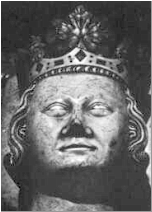

|
Проклятие Жака де Моле
[Бессмертие Ордена Тампля] [Туринская Плащаница]
К
ак и мученики, которые возносили хвалу Господу, Жак де Моле, объятый языками пламени, пел гимны. Мезере (Mezeray) говорил, что люди слышали, как Великий магистр прокричал: «Климент! Греховный судья и бессердечный палач! Я говорю: через сорок дней тебя настигнет кара господня!». Согласно Верто (Vertot), некоторые очевидцы писали, что де Моле также обещал, что и король не позднее, чем через год, предстанет перед Господом. Смерть Папы и короля случилась в точно предсказанные сроки, и это породило легенду о том, что их настигла Божья кара. Более поздние легенды рассказывают, что Великий магистр тамплиеров кричал: «Будьте прокляты! Будьте прокляты! Я проклинаю вас и ваши семьи до тринадцатого колена!». Толпа рыдала, глядя на трагедию, которая разворачивалась на их глазах, и говорят, что некоторые набожные зрители кинулись затем собирать прах достойных рыцарей. Даже если эти предания не совсем соответствуют действительности, они, по крайней мере, говорят в пользу того, что общественное мнение было уверенно в невиновности приговоренных. Как точно подметил Боссюэ (Bossuet): «Они сознались под пытками, но перед лицом смерти отреклись от показаний».
Климент V умер от страшной болезни 20 апреля 1314 года, месяц спустя после казни, Гийом де Ногаре (Guillaume de Nogaret), который руководил арестами тамплиеров во всей Франции в 1307 году, 27 апреля 1314 года был отравлен. Всего несколько месяцев спустя, 29 ноября 1314 года, во время охоты на кабана погиб Филипп Красивый (предположительно, он упал с лошади). После его смерти на престол взошел старший сын Филиппа – Людовик X Сварливый (Louis X the Quarrelsome). Затем, спустя два года, он умер от скоротечной лихорадки – он простыл, отдыхая в сырой пещере после жаркой игры в теннис. Поскольку его жена, королева Клеменция (Clemence), была беременна, то регентом стал Филипп Длинный (Philip the Tall), брат Людовика. 15 ноября 1316 она родила мальчика Жана (Jean), который прожил лишь пять дней (Иоанн I Посмертный) (John I the Posthumous).
После этого Филипп принял королевский титул под именем Филиппа V, но были
те, кто был готов оспорить это решение. У Людовика X уже была дочь по имени
Жанна от первой жены, Маргариты, наследницы Наваррской короны. Ее дядя, герцог
Бургундский, заявил, что она также может претендовать на французский престол. Впервые
со времен Гуго Капета (Hugues Capet) корона не перешла напрямую от отца к сыну,
и передача власти от племянника дяде могла послужить основанием для того, что
обычай стран, где женщины могли управлять государством, пришел на смену
традиции, сложившейся за время правления двух династий, когда подобного не допускалось.
Этот спор был формально улажен на парижской ассамблее: древние трактовки
оставались в силе, хотя ни в одном письменном законе, включая салический,
нельзя было найти такаих указаний на правила наследования короны. Филипп V
правил шесть лет и умер в двадцатидевятилетнем возрасте. В 1322 году на трон взошел
младший сын Филиппа Красивого Карл IV, но через шесть лет почил и он. Ему было
33 года.
Таким образом, в течение следующих четырнадцати лет каждый из трех сыновей Филиппа Красивого, которым досталась отцовская красота и, казалось, были обещаны долгая жизнь и многочисленные потомки, взошел на престол и умер, не оставив наследников. Корона перешла ближайшему из кровных родственников по боковой линии, Филиппу Валуа (Philip of Valois). Однако по причине того, что вдова последнего короля была беременна, он мог оставаться лишь регентом до рождения ее дочери. Салический закон, извлеченный на свет в 1316 году, чтобы обеспечить престол второму сыну Филиппа Красивого, положил конец династии Капетингов.
Бессмертие Ордена Тамплиеров
[Проклятие Жака де Моле] [Туринская плащаница]
Принял ли Жак де Моле какие-то меры для того, чтобы сохранить сокровища и секретные документы тамплиеров? Верил ли он, что Орден Храма переживет его? История не дает однозначных ответов на эти вопросы, но есть несколько теорий, включая и три нижеследующие, которые историки считают наиболее правдоподобными:
-
Теория Жерара де Вийе (Gerard de Villers)
В июне 1308 года Жан де Шалон (Jean de Chalon), рыцарь Немурского храма (Nemours Temple), сообщил самому Папе интересные сведения: в ночь перед арестом Жака де Моле из Парижского храма выехала процессия из трех повозок, покрытых соломой. Ее сопровождали двое тамплиеров, Гуго де Шалон (Hugues de Chalons) и Жерар де Вийе (Gerard de Villers), настоятеля Ордена во Франции. Вполне можно предположить, что по приказу Великого магистра на эти повозки были погружены документы и золото, и что на подмену по пути было выделено 50 лошадей. Более того, флот Ордена, крупнейший на западе, стоявший в то время в порту приписки Ла-Рошель (La Rochelle), тогда же отплыл в неизвестном направлении, скорее всего, на север Франции. К тому моменту, когда солдаты короля достигли Ла-Рошели, огромный флот словно испарился. Нет сомнения, что повозки, выехавшие из парижского Храма ночью 12 октября 1307 года, тоже двинулись на север, там груз был переброшен на корабли, прибывшие из Ла-Рошели, и исчез навсегда. Что произошло с флотом, куда он напраился – этого так и не удалось выяснить, однако полагают, что большая его часть пристала к берегам Иберии. Многие тамплиеры нашли себе пристанище в Испании и, особенно, в Португалии, где они вступили в Орден рыцарей Христовых (Order of the Knights of Christ), основанному королем Динисом (Diniz) специально по этому случаю.
-
Теория Пьера Д’Омона (Pierre d'Aumont)
Несмотря на «катастрофу» (массовые аресты 1307), многим тамплиерам удалось скрыться в самой Франции. Одним из них был Пьер Д’Омон, бывший Великий магистр Оверенский (Auveregne). Он оставался рядом с де Моле до его последнего дня. Скорее всего, его не оставляла надежда, что Магистра все-таки освободят, и это удерживало его от того, чтобы уехать из страны, как это сделали многие. Видимо, одним из последних желаний Магистра было, чтобы он сделал это, поскольку вечером 18 марта 1314 года Д’Омон и еще восемь рыцарей, переодетых масонами, собрали прах де Моле, протянули мечи к эшафоту и воскликнули «МакБенах*!». Они поклялись отомстить за своего господина и не дать Ордену тамплиеров погибнуть. Д’Омон, как утверждают, отправился в Шотландию, и 24 июня 1315 года на острове Мулл (Mull) был посвящен в Великие магистры Ордена. Считается, что тамплиеры оказали неоценимую помощь королю Роберту Брюсу (Robert Bruce) в войне с англичанами, а также стояли у истоков создания масонской ложи («Святого Дома»).
* Это выражение происходит из древнееврейского «MakBenach», что означает «плоть от костей отделяется». Впервые оно было использовано в качестве боевого клича зодчими архитектора Хирама, построившего храм Соломона в Иерусалиме, когда те обнаружили своего господина зверски убитым и поклялись за него отомстить. С тех пор, спустя столетия, клич мстителей Хирама оставался символом борьбы против тирании царей. В средние века убийство Хирама, поход девяти рабочих за его телом и его последующее погребение были центральным сюжетом при исполнении обряда посвящения в Орден тамплиеров, а в 18 веке этот ритуал был возрожден масонами и существует по сей день.
-
Теория Данте Алигьери (Dante Alighieri)
Будучи изначально членом партии гвельфов, которые поддерживали Папу, Данте, как и остальные белые гвельфы встали на сторону гибеллинов и императора Генриха VII. В 1302 году, когда страшные черные гвельфы захватили власть во Флоренции, Данте был приговорен к смерти. Он бежал из города и никогда больше туда не возвращался. С тех пор он жил в разных итальянских городах, в основном в Вероне, и несколько раз ездил во Францию. Известно, что он посещал Париж в 1304 году и приехал туда еще раз между 1307 и 1310. Некоторые историки полагают, что Данте виделся с де Моле незадолго до ареста последнего в 1307 году. Цели этой встречи неизвестны, однако вероятно, что де Моле дал итальянскому поэту какое-то поручение или доверил некие документы. Известно, что Данте был членом общества Верных любви (Fedeli d'Amore), тайного братства, разделявшего благородные взгляды с Орденом тамплиеров, а значит, де Моле мог бы довериться ему. Позже, в 1314 году, Данте возвращается в Париж, чтобы стать свидетелем сожжения Великого магистра. В своей знаменитой трилогии «Божественная комедия» («Ад»,«Чистилище»,«Рай»), Данте не раз в иносказательной форме упоминает тамплиеров, их мученичество и возможное возвращение.
Существуют и другие безумные теории, доказавшие к сегодняшнему дню свою несостоятельность, но все еще будоражащие воображение. Теория Гишара де Божо (Guichard de Beaujeu), который, как предполагают, обнаружил часть сокровищ Тамплиеров, основывается на так называемом «документе Шиффмана» (Schiffman document), носящем весьма характер. Теория Лармениуса (Larmenius), самопровозглашенного преемника де Моле, опирается на документы, обнаруженные в 1804 году Бернаром Раймоном Фабре-Паларпра (Bernard Raymond Fabre-Palarprat), позже признанных поддельными; теория Жоффруа де Гонвилля (Geoffroy de Gonneville), который, как предполагают, сбежал из заключения и продолжил работу Ордена, - это грязная провокация, затеянная лидером дьявольского культа.
Мы никогда не узнаем точно, какова была последняя воля де Моле, что он наказал и что передал своим рыцарям и друзьям перед арестом. Однако история уже подтвердила, что после 1314 года тамплиеры нашли надежное убежище в Португалии и Шотландии. Также известно, что у общества «Верные Любви» (Faithful of Love) Данте было много общего с тамплиерами, в частности, их объединяла склонность к эзотерике и герметике. Даже учитывая то, что эти теории с годами обрастали легендами, а сомнительные религиозные культы использовали и искажали их по своему усмотрению, все говорит в пользу того, что у них есть серьезное историческое обоснование.
Туринская плащаница
[Проклятие Жака де Моле] [Бессмертие Ордена Тамплиеров]
 Исследование Туринской плащаницы радиоактивным углеродом,
проведенное в 1988 году, датировало ее концом XII – началом XIV века. Для
сравнения было проведено исследование мантии Людовика IX двойным слепым
методом, которое с исключительно высокой точностью установило, что эти
церемониальные одежды относятся к периоду между 1263 и 1283 годами. Эти даты совершенно
верны, поскольку монарх умер от чумы в Тунисе в 1270 году. Результаты
исследования других образцов тоже никак не противоречили установленным
историческим датам. Результаты, полученные в результате исследования Туринской
плащаницы, невозможно опровергнуть. Более того, при помощи того же
радиоактивного углерода доказано, что лен, из которого была соткана плащаница,
был собран между 1260 и 1390 годами.
Исследование Туринской плащаницы радиоактивным углеродом,
проведенное в 1988 году, датировало ее концом XII – началом XIV века. Для
сравнения было проведено исследование мантии Людовика IX двойным слепым
методом, которое с исключительно высокой точностью установило, что эти
церемониальные одежды относятся к периоду между 1263 и 1283 годами. Эти даты совершенно
верны, поскольку монарх умер от чумы в Тунисе в 1270 году. Результаты
исследования других образцов тоже никак не противоречили установленным
историческим датам. Результаты, полученные в результате исследования Туринской
плащаницы, невозможно опровергнуть. Более того, при помощи того же
радиоактивного углерода доказано, что лен, из которого была соткана плащаница,
был собран между 1260 и 1390 годами.
Если лицо, изображенное на плащанице, не могло принадлежать Иисусу, то кто это? Кристофер Найт (Christopher Knight) и Роберт Ломас (Robert Lomas) задаются этим вопросом в своей книге «Второй Мессия». По их мнению, нет никаких сомнений в том, что лицо, изображенное на плащанице, принадлежало Жаку де Моле. В пользу этой версии говорит то, что она гораздо проще и правдоподобнее той нелепицы, которую отстаивают те, кто утверждает, что на плащанице изображен лик Христа.
По мнению последних, плащаница была обнаружена неким Абгаром (Abgar), царем Эдессы (Edessa) (ныне город Урфа (Urfa), Турция), который обратился в христианство в начале I века. Якобы он стал хранителем плащаницы после того, как прикоснувшись к ней, исцелился от проказы. Говорят, что, когда его преемник вновь обратился в язычество, горожане, исповедовавшие христианство, на протяжении пяти столетий укрывали святыню. В 944 году византийцы, называвшие ее «мандилион» (греческое название церковной одежды), по всей вероятности, забрали Плащаницу у мусульман, правящих в это время в Эдессе. До 1204 года она находилась в Константинополе, когда город впервые подвергся нападению крестоносцев Четвертого Крестового похода - именно тогда тамплиеры и завладели ею. Спустя столетие, она, видимо, попала в руки Жоффруа де Шарне (Geoffroy de Charnay), впоследствии ставшему правителем Нормандии и соседом Жака де Моле на костре 18 марта 1314 года.
Согласно Найту и Ломасу, Плащаница перешла к де Шарне именно между 1307 и 1314 годами, и лицо, изображенное на ней, принадлежит де Моле. К такому заключению их привели следующие шесть соображений:
-
Это единственная версия, совершенно не противоречащая научному анализу Плащаницы
-
Жак де Моле был накрыт Плащаницей после ужасных пыток, которым его подвергнул Гийомом Эмбер (Guillaume Imbert), личный духовник короля и Великий инквизитор. Де Моле били плетью до тех пор, пока он не начал истекать кровью, надели ему на голову венец, сделанный из острых предметов, изорвавший кожу на его голове, и, в конце концов, его гвоздями прибили к доскам – «распяли». Такие мучения вызвали определенные химические реакции в организме Великого магистра, которые привели к тому, что на Плащанице остались отпечатки его лица и тела.
-
Для его распятия были две причины. Во-первых, Инквизиция испытывала особую любовь к этому виду пыток, а во-вторых, это так Эмбер хотел наказать тамплиера за вменяемые ему грехи (тамплиеров обвиняли в ереси: они якобы отрицали смерть Христа на кресте)
-
Жертву перед пытками всегда раздевали и очень любили прибивать пытаемых гвоздями к тому, что окажется под рукой
-
Научно доказано, что человек на Плащанице, если он оставил подобный отпечаток, был жив и лежал на постели. Именно так было с Жаком де Моле, который хоть и едва дышал после допроса, все еще оставался жив, в то время как Иисус после распятия был мертв и лежал на камне.
Два года спустя на папской комиссии Жак де Моле смог продемонстрировать свои раны и шрамы в качестве доказательства жестокого обращения, которому он подвергся.
Эта теория также подтверждается историей плащаницы, так как первое
упоминание о ней датируется 1357 годом, когда ее впервые выставили на всеобщее
обозрение. В июне 1353 года Иоанн II Добрый (John II the Good) поручил Жоффруа
де Шарне построить коллегиальную церковь в Лире (Lirey). Де Шарне был никем
иным как внучатым племянником того самого де Шарне, которого казнили в 1314
году. Церковь была освящена 28 мая 1356 года, и не составляет труда выяснить,
что на тот день в числе вещей, принадлежащих этому святому месту, плащаница не
значилась.
Спустя четыре месяца Жоффруа де Шарне погиб в битве при Пуатье. Его вдова Жанна
де Вержи (Jeanne de Vergny), доведенная до нищеты, искала средств к
существованию. Среди вещей покойного мужа она нашла бережно свернутую
Плащаницу. Развернув ее, она увидела образ человека, напоминавшего Христа. И
хотя вдова наверняка знала, что это Жак де Моле, она быстро смекнула, что может
извлечь выгоду из этой реликвии. Она выставила ее на обозрение в церкви, была
выбита памятная медаль с ее изображением, которая ушла за большие деньги.
Церковь, которой было известно, что лик на Плащанице принадлежит не Иисусу, а
де Моле, приказала ее уничтожить.
Жанна перестала демонстрировать Плащаницу публично, но не уничтожила а просто спрятала
ее. Впоследствии, после того, как она повторно вышла замуж за Эмона де Геневенто
(Aymon de Genevainto), аристократа с огромными связями в церкви, она вновь решила
выставить плащаницу на всеобщее обозрение. Она сделала это в 1389 году с
благословения Папы (который был никем иным, как племянником ее мужа), несмотря
на попытки французского духовенства, знавшего, что Плащаница – фальшивка,
остановить ее.
Папа согласился закрыть глаза на этот обман по одной простой причине: к тому времени Жак де Моле, как и следовало ожидать, был возведен в святые мученики. Его даже сравнивали с самим Иисусом: ведь его тоже убил Рим (правда, на этот раз это была не Римская империя, а Римская церковь). Когда по христианскому миру прокатилась черная чума, церковь испугалась, что чудотворный лик Жака де Моле, появившийся на Плащанице, станет доказательством истязаний, которым Инквизиция подвергла Великого магистра Ордена храмовников перед тем, как казнить его. Нельзя было допустить, чтобы истинная личность человека, оставившего отпечаток на ткани, была установлена: церковь мог просто смести новый культ, культ Жака де Моле, сопоставимый с культом Иисуса Христа, породившим его. Они сделали встречный ход, согласившись показать Плащаницу народу и утверждая при этом, что на ней изображен лик Христа, хотя ранее они утверждали совершенно обратное.
[Проклятие Жака де Моле] [Бессмертие Ордена Тамплиеров] [Туринская плащаница]
   |